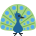

حرفا الطاء والضاد
الدرس 2 من 6 — القراءة
درسنانتعلّم اليوم الحرفين ط، ض. اضغط على الحرف لتسمع اسمه، ثمّ على المقاطع لتسمع صوته، ثمّ اقرأ الكلمات مقطعاً مقطعاً.
حرف الطاء
اضغط واستمع: الحركات
اضغط واستمع: المقاطع الطويلة والساكنة
أشكال الحرف في الكلمة
طـفي أوّلها
ـطـفي وسطها
ـطفي آخرها

طَائِرَةٌ
طَمَاطِمُ

طَاوُوسٌ
حرف الضاد
اضغط واستمع: الحركات
اضغط واستمع: المقاطع الطويلة والساكنة
أشكال الحرف في الكلمة
ضـفي أوّلها
ـضـفي وسطها
ـضفي آخرها
ضِفْدَعٌ
ضِرْسٌ

ضَبَابٌ
أُطبّق
1اختر الصورة التي تبدأ بحرف ط:
2استمع، ثمّ اختر الحرف الذي تسمعه:
3استمع، ثمّ اختر المقطع الصحيح:
4استمع إلى الكلمة: بأيّ حرف تبدأ؟
5استمع، ثمّ اختر المقطع الصحيح:
6اختر الصورة التي تبدأ بحرف ض:
7استمع، ثمّ اختر الحرف الذي تسمعه:
8استمع إلى الكلمة: بأيّ حرف تبدأ؟
إجابات صحيحة من أول محاولة:
أتمرّن أكثر
أستمع، ثمّ أكتب ما أسمع:
أستمع، ثمّ أكتب ما أسمع:
✓ أنهيتَ هذا الدرس
الرسوم: Twemoji (CC-BY 4.0) وFluent Emoji من Microsoft (MIT). الأصوات: صوت عربي اصطناعي.